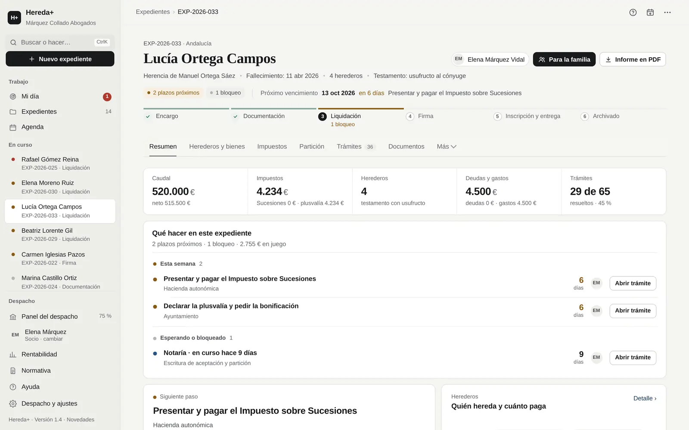
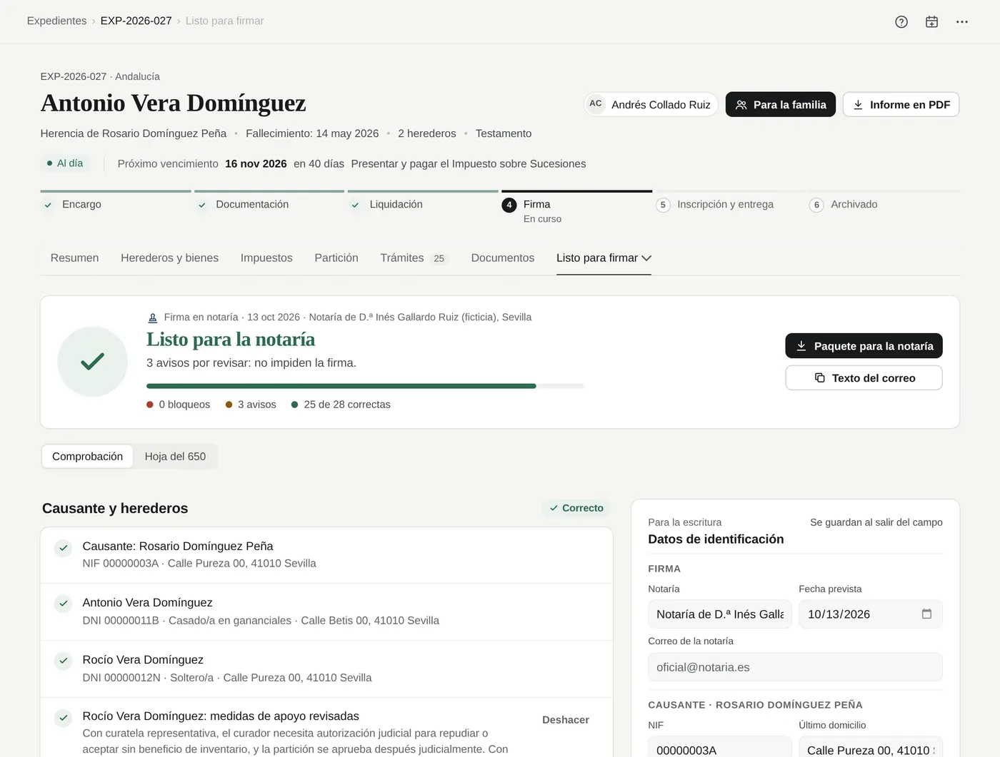

Software de sucesiones para despachos de abogados
La herencia, lista en una tarde.
Arrastra los documentos del cliente. Hereda+ los lee en tu ordenador, rellena el expediente, calcula Sucesiones y plusvalía y te dice qué hacer hoy. Tú revisas, decides y firmas.
30 días de prueba con todo incluido, sin tarjeta. En el navegador, en Windows y Mac.

Expediente del despacho de demostración. Todos los datos son ficticios.
Cómo funciona
Del montón de papeles al primer paso del día.
Lo que hoy son horas de teclear certificados, buscar la ordenanza del ayuntamiento y apuntar plazos en un Excel, en cuatro pantallas.
Arrastra los documentos. El programa los lee.
Certificados de defunción, de últimas voluntades y de seguros, testamento o acta de herederos, notas simples, Catastro e IBI, certificados de los bancos, DNI, escrituras, facturas del funeral. En PDF, en Word, escaneados o fotografiados con el móvil.
Cada dato propuesto dice de qué documento sale. Lo dudoso, o lo que choca con algo que ya estaba, va sin marcar. Tú eliges qué entra.
- Se leen en tu ordenador: los documentos no se suben a ningún servidor
- Sin IA: reglas escritas para cada tipo de documento
- Lo que no se reconoce se deja vacío, nunca se inventa


El expediente queda calculado.
Personas, inmuebles con su valor de referencia y su valor catastral, cuentas a la fecha del fallecimiento, deudas y gastos. Con eso salen el caudal, el Impuesto sobre Sucesiones de cada heredero y la plusvalía de cada inmueble.
Todo lo leído queda señalado «leído de documento» y los documentos, «por revisar» hasta que los valides.

Cada mañana, qué hacer hoy.
Mi día reúne lo vencido, lo que vence esta semana, lo que espera a la familia, al banco o a la notaría y desde cuándo, y lo que lleva un mes parado. Cada línea con su acción a un clic.
Dentro de cada expediente, la misma lista: crítico, esta semana y esperando a terceros. Se calcula con reglas a partir de los plazos y los datos que faltan.

Escritos, notaría y familia.
Solicitudes a bancos y registros, prórroga, renuncia y cuaderno particional en PDF y Word con el membrete del despacho. Antes de la firma, una comprobación previa y el paquete completo para la notaría.
Para la familia, la herencia explicada en una carpeta de una página y el modo reunión a pantalla completa.

Producto
Lo que hoy está en Excel, Word, carpetas y correos, en un solo sitio.
Los programas de gestión de despachos no calculan impuestos. Las calculadoras no llevan el despacho. Hereda+ hace las dos cosas, solo para herencias.
Sucesiones de 22 territorios y plusvalía de 8.132 municipios
Las 15 comunidades de régimen común, Navarra, Álava, Bizkaia, Gipuzkoa, Ceuta, Melilla y la norma estatal para no residentes. En plusvalía, la ordenanza de 303 municipios, el tipo oficial de las 48 capitales y los 100 municipios de más de 50.000 habitantes, y en el resto el máximo legal con aviso para poner el de su ordenanza.

El despacho entero, de un vistazo
El socio ve el porcentaje de expedientes al día, la carga de cada persona, los expedientes en riesgo, lo presupuestado, facturado y cobrado, y el tiempo medio de cada fase. Cada persona tiene su perfil: socio, abogado o administrativo.

Partición y estrategia fiscal
Cuadro de adjudicaciones con excesos, lotes que reducen la plusvalía y el ahorro de cada opción en euros, con su riesgo y su norma.
Legítimas comunes y forales
Control de legítimas también en los territorios con derecho civil propio, y cuánto costará la segunda herencia según el reparto de hoy.
183 trámites con plazo
Cada trámite con su organismo, su plazo, los días de espera y su enlace oficial. Semáforo de la cartera y exportación al calendario.
Registro de cambios
Quién cambió qué y cuándo, con el valor anterior y el nuevo: porcentajes, renuncias, valores, adjudicaciones, fase, honorarios y fondos.
Búsqueda en toda la cartera
Ctrl K encuentra expedientes, personas por nombre o NIF, inmuebles por referencia catastral, cuentas por IBAN, documentos y tareas.
Documentos con estado
Recibido, por revisar, validado. Lo que lee el programa espera a que lo valides, y la lista de lo que falta pedir al cliente se hace sola.
Encargo, fondos y rentabilidad
Hoja de encargo con presupuesto, provisión de fondos y suplidos, honorarios por facturar y euros por hora de cada herencia.
Traer la cartera desde Excel
Guarda tu hoja como CSV, súbela, revisa lo que va a entrar y confirma. Las herencias que ya tienes abiertas, sin teclearlas otra vez.
Calculadora para tu web
Con la marca del despacho: las familias calculan lo que pagarían y te escriben para que revises su caso. Pruébala.
Confianza
Tu criterio. Tus datos.
Hereda+ prepara el trabajo; la decisión y la firma son del abogado. Está hecho para que puedas comprobar cada cifra y responder del expediente con tranquilidad.
Los datos se quedan en el despacho
Expedientes y documentos se guardan en el navegador de cada equipo del despacho. No los recibimos ni podemos verlos. La lectura de documentos también se hace en el propio ordenador.
Copias automáticas en una carpeta del despacho y cifrado con contraseña.
Sin IA, con reglas
No usamos inteligencia artificial: ni para leer los documentos ni para calcular. Un motor de reglas con 1036 pruebas automáticas: el mismo caso da siempre el mismo resultado.
El abogado decide
Nada entra en el expediente sin que lo marques, y lo leído queda señalado. Las opciones fiscales de riesgo alto se quedan en «A valorar con el abogado». Hereda+ no presenta declaraciones ni firma nada.
Cada regla, con su fuente
Cada cifra enlaza a su norma: la ley de la comunidad, la ordenanza del ayuntamiento, el artículo. Y el registro de cambios deja constancia de quién tocó qué y cuándo.
Precios
Un precio al mes. Todo el programa.
Sin límite de expedientes. Las actualizaciones normativas, incluidas. Solo cambia cuántas personas lo usan.
Individual
Para el abogado que trabaja solo
o 590 € al año · sin IVA
- 1 usuario
- Todo el programa y sus actualizaciones
- Soporte por correo en un día hábil
Despacho
Socio y equipo, hasta 5 personas
o 1.290 € al año · sin IVA
- Hasta 5 usuarios
- Todo el programa y sus actualizaciones
- Puesta en marcha por videollamada, 30 minutos
Despacho+
Despachos de hasta 15 personas
o 2.490 € al año · sin IVA
- Hasta 15 usuarios
- Atención prioritaria
- Puesta en marcha por videollamada, 60 minutos
Oferta de lanzamiento · Plan Fundador
10 despachos, 49 € al mes, precio fijo.
Lo mismo que el plan Despacho, con el precio fijo mientras la licencia siga activa. Para los 10 primeros despachos que lo soliciten antes del 31 de diciembre de 2026.
Precios sin IVA. Pago por adelantado por transferencia: trimestral, semestral o anual (el año, al precio de 10 meses). Sin permanencia más allá del periodo pagado. Prueba de 30 días con todas las funciones; si no contratas, los expedientes quedan en solo lectura y nunca se bloquean. Comparativa completa y condiciones.
Preguntas frecuentes
Lo que suelen preguntar los socios.
¿Dónde se guardan los expedientes y los documentos?
En el navegador de cada equipo del despacho. No pasan por nuestros servidores y no podemos verlos. Por eso el programa hace copias automáticas en una carpeta del despacho (por ejemplo, la sincronizada con OneDrive o Dropbox) y permite cifrarlas con contraseña.
¿Usa inteligencia artificial?
No. El lector reconoce cada tipo de documento con reglas escritas para él, y el cálculo lo hace un motor de reglas con 1036 pruebas automáticas. El mismo caso da siempre el mismo resultado y se puede explicar línea a línea.
¿Y si se equivoca?
Está pensado para que el error se vea antes de que cueste. Lo leído entra solo si lo marcas y queda señalado; lo dudoso va sin marcar; cada cifra enlaza a su norma; y el cálculo es prudente cuando falta un dato (por ejemplo, la plusvalía usa el método objetivo, nunca «no sujeto» por falta de datos).
Los resultados son estimaciones con la normativa cargada y los revisa el abogado antes de presentar. Si encontramos un error de cálculo, lo corregimos y avisamos a los despachos afectados.
Ya llevo las herencias en Excel. ¿Tengo que empezar de cero?
No. En Despacho y ajustes › Datos, «Traer la cartera desde una hoja»: guardas tu Excel como CSV, lo subes, revisas lo que va a entrar y confirmas. Luego completas cada expediente con sus documentos.
¿Hay que instalar algo?
No. Funciona en el navegador (recomendamos Chrome o Edge actualizados), en Windows y Mac, y se puede instalar como aplicación desde la barra de direcciones. Funciona también sin conexión.
¿Varios abogados pueden trabajar con los mismos expedientes?
Cada persona tiene su perfil (socio, abogado o administrativo) y el socio ve el panel de todo el despacho. Hoy cada equipo guarda sus propios datos: los expedientes se pasan entre equipos exportándolos e importándolos. La sincronización en la nube, con servidores en la Unión Europea, llegará más adelante como opción y con su propio contrato de encargo del tratamiento.
¿Presenta los modelos 650 y 660?
No. Calcula y prepara la liquidación de cada heredero, indica qué modelo corresponde en cada comunidad y enlaza a su programa de ayuda. La presentación la hace el despacho.
¿Qué pasa si dejo de pagar?
El programa pasa a solo lectura: puedes consultar, imprimir y exportar todo, sin límite de tiempo. Tus expedientes nunca se bloquean ni se borran.
¿Cómo se contrata?
Rellenas la solicitud, te enviamos la confirmación y los datos para la transferencia, y al recibirla te llegan el código de licencia y la factura, normalmente el mismo día. El código se pega en Despacho y ajustes › Licencia; lo que hiciste durante la prueba sigue donde estaba.
Hablemos
Quince minutos y una herencia de principio a fin.
Abre el despacho de demostración y recorre un expediente tú mismo, o pídenos una videollamada y te lo enseñamos con tus preguntas. Mejor aún: trae una herencia ya presentada, sin nombres ni DNI, y compara las cifras.
Solo escribimos a quien nos lo pide. No enviamos correos comerciales que no hayas solicitado.